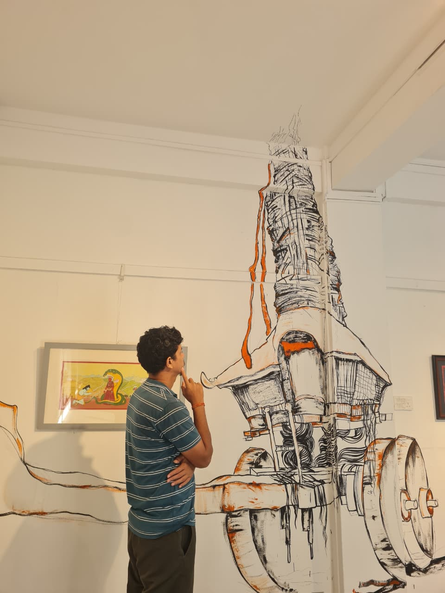
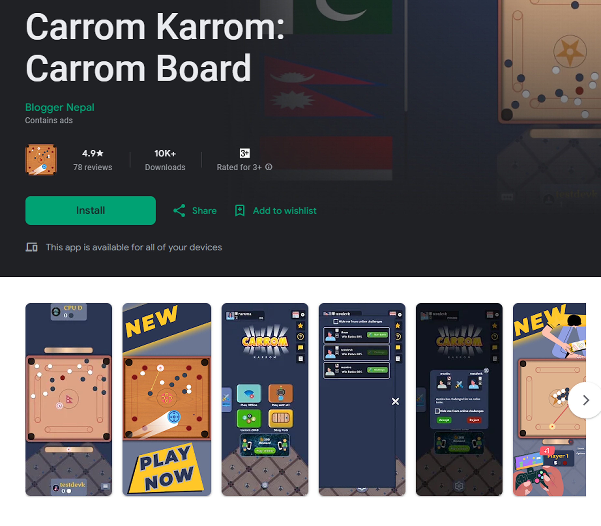
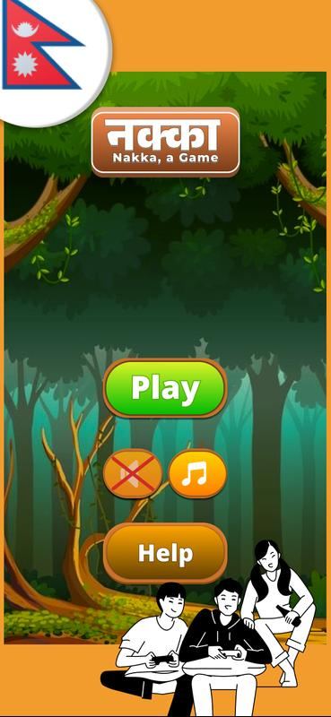
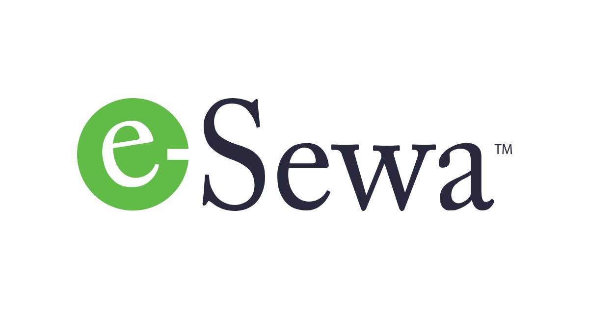
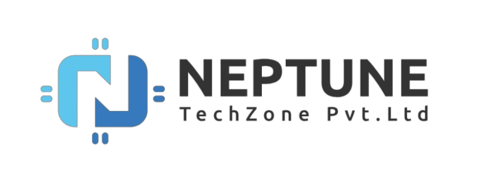

Graphic Design Intern
Designer based in Nepal
Sujeet Khadka makes digital things feel clearer.
I’m Sujeet — a UI/UX and visual designer exploring the space between a good idea and a product people enjoy using.
✳
↗

A designer who learns by making
— Kathmandu, Nepal
Selected work
A mix of shipped products, games and case studies.
Android · iOS · Live on Google Play and App Store
Aama Cure
A maternity care app for Nepali mothers, covering fertility, pregnancy tracking, vaccinations, counselling and postpartum care.
UI/UX designer · Research, wireframes, prototypes, usability testing, developer handoff and implementation review.
50K+ downloads · 4.9 rating · 100+ reviews
Carrom Karrom
A lightweight carrom game redesigned for older, low-storage phones. Analytics showed most players use devices 7–10 years old.
UI/UX and visual design · Complete interface and all assets designed in Figma. Game logic and deployment by Sagar Devkota.
1K+ downloads
Nakka: Nepali Traditional Game
A mobile version of a traditional Nepali game, designed around nostalgia, accessibility and offline play.
UI/UX and visual design
Case study
Improving eSewa's user experience
A redesign proposal for reducing accidental top-ups and home-screen clutter, based on real user complaints and heuristic evaluation.
Self-initiated case study · Research, analysis and redesign. Current image is an official eSewa brand visual; before-and-after screens can replace it.More projects
2048 Dark Mode EditionA UX-focused redesign adding dark mode, move history and
sound feedback.↗
Online Bus Reservation SystemMy final-year project; UI/UX design and front-end build
with Figma, HTML, CSS, Flowbite, Node.js, SQLite.↗
Nepali Festive CounterA festive counter app with interactive elements.↗
The Progress Bar npA portfolio-style project showcase with design-first process
notes.↗
ConnectumConnect-the-dots game UI and assets, designed in Figma.↗
UI/UX design✦User
research✦Wireframing✦High-fidelity
prototyping✦Usability testing✦Developer
handoff✦Design systems✦Branding &
identity✦Figma✦Adobe Photoshop✦UI/UX
design✦User research✦Wireframing✦High-fidelity
prototyping✦Usability testing✦Developer
handoff✦Design systems✦Branding &
identity✦Figma✦Adobe Photoshop
01 / Experience map
Still moving,
still making.
A nonlinear path through design, technology, and the work that shaped how I think about useful products.
KM
Graphic Designer & UI/UX · Part-time
KMAG Pvt. Ltd.
Collaborated on a Figma UI redesign across mobile and desktop, while creating product assets and logo drafts with brand accuracy.↗
NCUI/UX Designer
Neptune TechZone · Aama Cure
Designed and shipped the live Android and iOS maternity health app end to end: research, wireframes, prototypes, testing, handoff, and implementation review.↗UI/UX & Graphic Designer · Freelance
Upwork · webapex.com.au
Delivering logically structured web banners and digital assets for an Australian client, with responsive layouts and international brand standards.↗✦ Hover a milestone to expand its story ✦
The games and experiments are in Selected work ↓ Read the project notebook ↗02 / Tools & craft
The toolkit.
A hands-on collection of design skills, tools, and ways of working I use to turn rough ideas into useful products.
01 / Understand
Research & strategy
Finding the real problem through user flows, interviews, audits, and clear product thinking.
User research · UX strategy02 / Shape
UI/UX design
Building calm, structured interfaces that make digital products easier to understand and use.
Figma · Design systems03 / Test
Prototyping
Moving quickly from wireframes to high-fidelity prototypes, testing ideas before they become expensive.
Wireframing · Usability testing04 / Express
Visual design
Creating identity, graphics, and visual systems with detail, consistency, and a little character.
Branding · Photoshop05 / Build
Front-end basics
Bridging design and implementation with semantic HTML, CSS, JavaScript, and thoughtful handoff.
HTML · CSS · JavaScript06 / Deliver
Collaboration
Working with developers and content teams to keep the final product faithful, flexible, and useful.
Handoff · Communication03 / From the notebook
Thinking out
loud.
Notes on interfaces, product decisions, and the tiny details that shape how digital things feel.
03 Jun 2026
↗
08 May 2026
↗
18 Dec 2025
↗
See all writing on
Medium ↗
Interaction design · 7 min read
Why LinkedIn and Reddit intentionally broke the ‘enter’ key
A closer look at how one tiny interaction changes the rhythm of writing, and what that teaches us about intentional friction.Visual design · 6 min read
The great UI shrink: is minimalism a design philosophy or a corporate trap?
When “less” becomes a default, what gets removed—and who is left doing the work of understanding the product?UX case study · 8 min read
Improving eSewa’s user experience
Reducing accidental top-ups and fixing home-screen clutter through clearer hierarchy and calmer decisions.04 / A little about me
Sujeet Khadka:
curious by nature.
I’m a designer from Nepal. My work began with a final-year school project and grew through personal experiments in mobile games, small web products, and interface design.
I learn by making — designing in Figma, building selected ideas with Godot, HTML, CSS, and JavaScript, and using AI-assisted tools to explore and iterate.
05 / Have an idea?